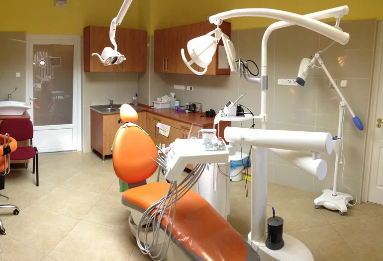
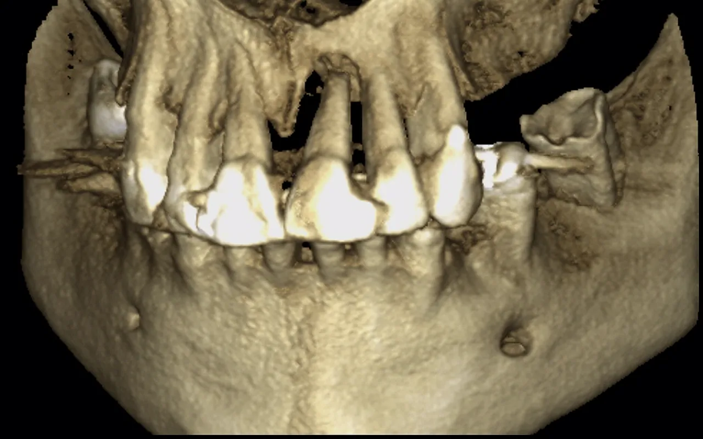
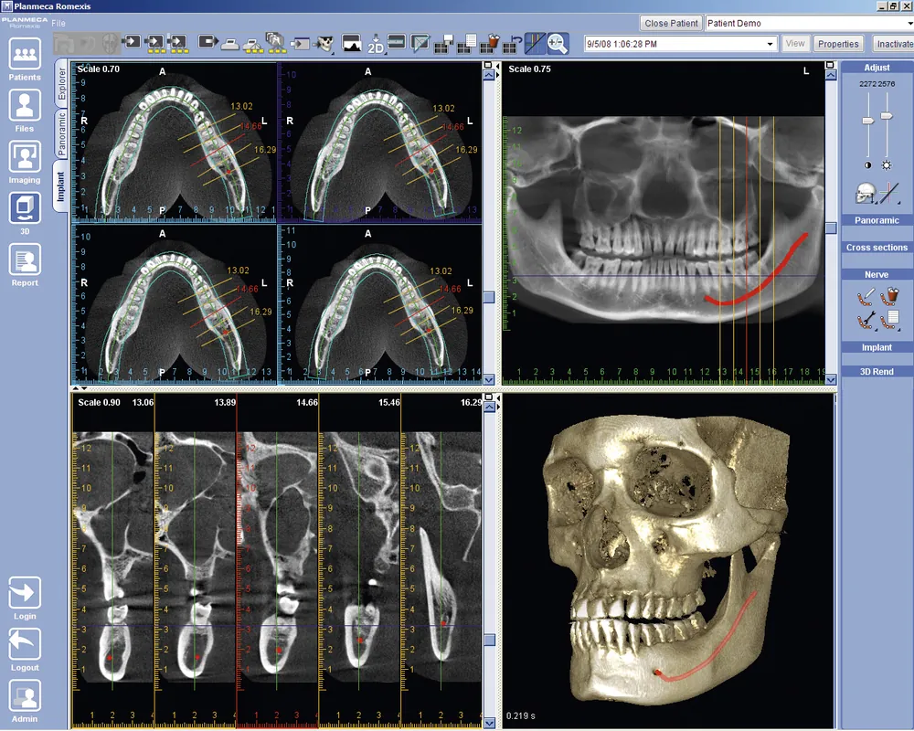
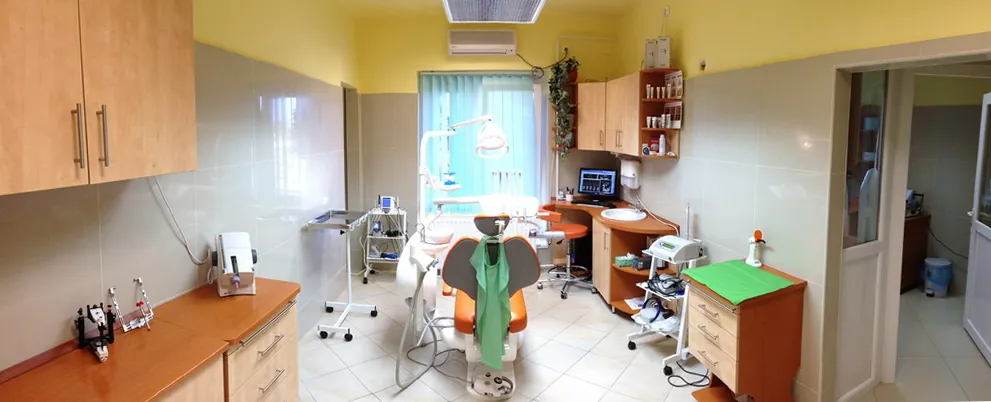
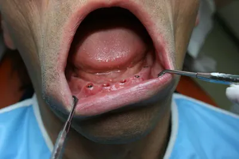
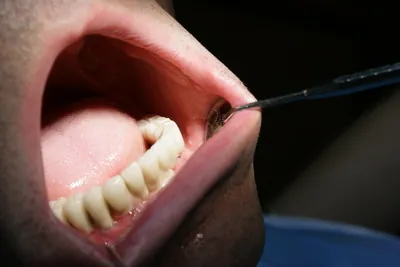
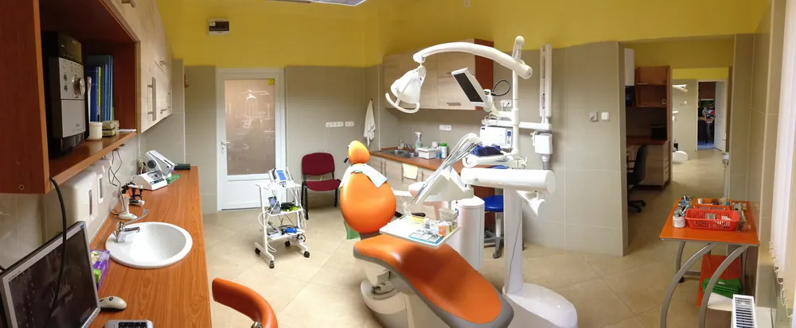
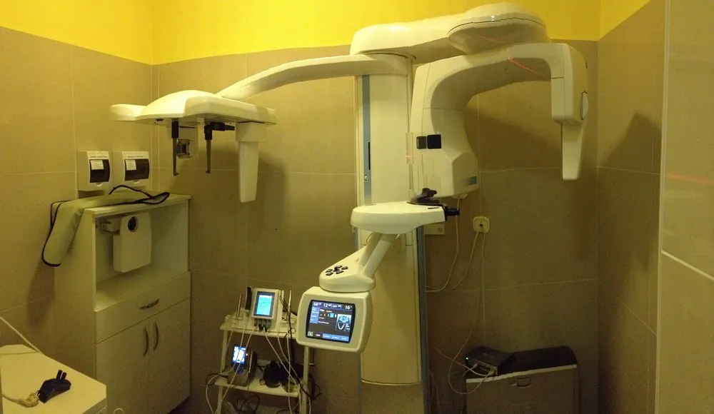
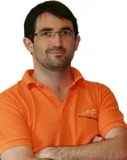

Fogorvosi és szájsebészeti magánrendelő
„Kezelni csak felismert betegséget lehet, ezért a diagnosztikában nem ismerhetünk kompromisszumokat.” A CT-felvételtől a kész koronáig minden egy épületben készül.
Akut esetben hívja: +36 30 500 1211
Implantáció lépésről lépésre, egy épületben
Kattintson végig a lépéseken: mi történik, hol, mennyi ideig tart, és mire készüljön Ön az egyes szakaszokban.

3D CT, a rendelőn belül
A Planmeca ProMax 3D egyetlen félköríves körben szkenneli végig a kiválasztott területet; ami azon kívül esik, nem kap sugárterhelést.
- szkennelési idő 18 másodperc, ebből a tényleges expozíció csak 3 másodperc
- vizsgált terület: Ø40×50 mm-től Ø80×80 mm-ig
- helyben digitális panoráma-, tele- és kis röntgen is

Több út, együtt választva
„Egy betegségnek sok gyógymódja lehet, amik közül mindenki számára más a legjobb, vagy a legkevésbé megterhelő.” A tervezésnél azt mérlegeljük, ami Önnek fontos:
- ne legyen megterhelő, gyorsan készüljön el, ritkán kelljen bejárni
- esztétikus, kényelmes, könnyen tisztítható legyen
- ne jelentsen nagy anyagi terhet, és ne maradjon fog nélkül közben

Helyi érzéstelenítésben
Esetleg gyenge szedációban. A csontban a furat helyén nincsenek idegek, ezért a beavatkozás nem jár fájdalommal: csak rezgés, nyomás érezhető. A sebet varrattal zárjuk, nyílt seb nem marad. Sok esetben a fog eltávolításával egy időben is beültethető.

Átlagosan három hónap
Ennyi idő után terhelhető az implantátum. Addig bizonyos esetekben ideiglenes fogpótlás készülhet. Ha előbb csontpótlás (sinus lift) kell, az legalább 6 hónap gyógyulást jelent.

A korona a ház saját laborjából
A Mühl Fogtechnika 1994 óta működik, és közel 20 éve kiemelt fogtechnikus-képzőhely. Három különböző CAD/CAM rendszerrel készülnek a fémmentes kerámia (eMax), cirkónium, titán és kobalt-króm vázak.
- a borítókerámiát a fogtechnikusok egyénileg festik a valósághű színért
- a pótlás a páciens egyéni rágóízületi adataival, Artex-rendszerben készül

Dokumentálva, kontrollal
Az elkészült fogpótlás megfelelőségét röntgen- és fényképfelvételekkel dokumentáljuk. A rendszeres kontroll és a szájhigiénikus munkatárs segít megelőzni az implantátum körüli gyulladást.
Teljes körű ellátás egy helyen
Kiterjedt általános fogorvosi gyakorlat mellett specializálódunk, hogy implantológiában, szájsebészetben, fogszabályozásban és fogágybetegségben is egy helyen kapja meg az ellátást.
Időpontot kérekImplantológia
Egy fog pótlásától a teljes rögzített fogsorig, csontfelépítéssel ha kell.
Szájsebészet
Bölcsességfog-műtét, sebészi foghúzás, gyökércsúcs-rezekció, ciszta, sinus lift.
Fogmegtartó kezelések
Esztétikus tömés, inlay/onlay betét, gyökérkezelés Apex Locatorral, gyökércsap.
Fogpótlás
Fém-kerámia, arany-kerámia és cirkónium korona, híd; teleszkópos és csúsztatós kombinált pótlás.
Parodontológia
Fogágybetegség és ínysorvadás kezelése, a fogágy műtéti regenerációja.
Gnathológia
Rendellenes kopás, állkapocsízületi panaszok, kisugárzó fájdalom – Artex-rendszerrel.
Fogszabályozás
Hagyományos és gyors, áttetsző fogszabályozó; nem kóros esetben akár 3–4 hónap.
Plazmalámpás fogfehérítés
Egy ülésben, 3×10 perc alatt átlagosan 8 árnyalattal fehérebb fogak a VITA-skálán, 0% UV.
Dentálhigiénia
Ultrahangos fogkőeltávolítás, polírozás, fogmosási technika és a pótlások tisztítása.
Radiológia
Panorámaröntgen, kis röntgen, 3D fog- és arckoponya-CT helyben.
Amit máshová kellene elküldeni, itt helyben van
- Arckoponya- és fog-CT
- PLANMECA PROMAX 3D
- Digitális panoráma-, tele- és intraorális röntgen
- PLANMECA · DIXI3
- Ambuláns szájsebészeti műtő
- ÁNTSZ-ENGEDÉLY
- Saját fogtechnikai labor
- 3 CAD/CAM RENDSZER
- Egyéni állkapocs-diagnosztikai rendszer
- ARTEX
- Sebészeti lézer
- SZÁJSEBÉSZET
- LED- és lézeres fogfehérítés
- BEYOND
- Kezelőhelyiség
- 3 DB
- Az Implant Direct magyarországi tréningközpontja
- IMPLANT DIRECT
„Ahogy a belgyógyászatban az ultrahang, úgy a fogászatban a 3D arckoponya- és fogászati CT forradalmasította a betegségek felismerését.”

140 m², három kezelő, saját váró
2008-ban épült, 2011-ben három székesre bővült, Komló központjában, a Tröszt épület földszintjén.
A fotók a régi weboldal saját képei; élesítés előtt friss fotózást javaslunk.
Fogorvosok, szájsebészek, asszisztensek

Dr. Mühl Attila
ügyvezető, fogszakorvos; dento-alveoláris sebészet (szájsebészet) szakorvos
- PTE ÁOK fogorvos szak; szájsebészeti szakvizsga, Semmelweis Egyetem
- Hangsúlyos területei: fémmentes esztétikus fogpótlás, fogágybetegségek ellátása, implantológia – évi 400–500 beültetés
- Implant Direct USA referenciatevékenység, mentorálás, szakmai előadások
- Dr. Sashegyi Patrikfogszakorvos, parodontológus
- Dr. Nagy Ákos Bálintfogorvos
Asszisztencia
- Szalai Bianka fogászati szakasszisztens
- Feketéné Szalkai Mária fogászati asszisztens
- Herget Brigitta fogászati asszisztens
- Pápai Szilvia fogászati asszisztens
- Abonyi Renáta fogászati asszisztens
Cégvezetés
- Kuhár Péter operatív cégvezető
4,8 / 5
56 vélemény alapján. Visszatérő téma: precíz, fájdalommentes munka és megnyugtató asszisztensek, évek óta visszajáró páciensek.
Több mint 10 éve jár ide; empátia, türelem, mindent elmagyaráznak. „A rendelő modern, tiszta és kellemes hangulatú. Az időpontok precízek, soha nem kellett hosszan várnom.”
A legügyesebb fogorvos: precíz, magabiztos, fájdalommentes. Az asszisztenst külön kiemeli: empatikus és megnyugtató, annak is, aki félt a fogorvostól.
Évek óta jár, mindig elégedett: precíz, figyelmes, türelmes ellátás, az asszisztens mindig megnyugtatja. „Különösen ajánlom olyanoknak akik félnek a fogorvostól.”
Pécstől 20 km, busszal az ajtóig
Pácienseink helyből (Komló, Pécs, Bonyhád, Sásd), a környékről, távolabbról és külföldről is érkeznek, a tengerentúli magyar közösségekből is.
- KOMLÓ
- PÉCS
- BONYHÁD
- SÁSD
- SZEKSZÁRD
- PAKS
- KAPOSVÁR
- BUDAPEST
- TORONTÓ
- CHICAGO
- CÍM
- 7300 Komló, Pécsi út 1., Tröszt épület, földszint – a belvárosban, a villanyrendőr és a vasúti átjáró közelében
- BUSZ
- Az épület előtt megállnak a Pécs–Mánfa–Komló távolsági és a helyi járatok
- AUTÓ
- Parkolás az épület mellett és mögött, vagy a LIDL parkolójában
- GPS
- 46° 11' 25.30", 18° 15' 36.47"
- ELŐRE
- Küldje el meglévő röntgen- vagy CT-felvételét, hogy az első alkalom hatékonyabb legyen
Mielőtt bejelentkezik
Mikor rendelnek?
Bejelentkezés alapján, hétköznap. Akut esetben hívja a +36 30 500 1211-es mobilszámot.
Elküldhetem előre a meglévő röntgen- vagy CT-felvételemet?
Igen. Ha van digitális anamnézise, panorámaröntgenje vagy CT-felvétele, küldje el a bejelentkezéskor vagy a muhlfog@gmail.com címre, így rugalmasabb és gyorsabb az ügyintézés.
Fáj az implantátum beültetése?
A beavatkozás helyi érzéstelenítésben, esetleg gyenge szedációban történik. A furat helyén nincsenek idegek, ezért nem jár fájdalommal, csak rezgés, nyomás érezhető. Utána általában egy fájdalomcsillapító elegendő.
Mennyi idő után kapom meg a végleges fogat az implantátumra?
Az implantátumok átlagosan három hónappal a beültetés után terhelhetőek. Addig bizonyos esetekben ideiglenes fogpótlás készülhet. Ha előbb csontpótlás (sinus lift) szükséges, az legalább 6 hónap gyógyulási időt jelent.
Mi történik, ha az implantátum nem gyógyul be?
A korai szövődmény miatti sikertelenség gyakorisága a komlói rendelőben 0,5% alatti. Ilyenkor az implantátumot további költség nélkül cserélik; ha erre a csont nem alkalmas, az implantátum ára az alternatív fogpótlás díjából jóváírásra kerül. Kivétel, ha a gyógyulási zavart rossz szájhigiénia vagy a javaslat ellenére viselt ideiglenes pótlás okozta.
Hogyan jutok el a rendelőbe Pécsről?
A rendelő Pécstől kb. 20 km-re, Komló belvárosában, a Tröszt épület földszintjén van, a villanyrendőr és a vasúti átjáró közelében. Az épület előtt megállnak a Pécs–Mánfa–Komló távolsági és a helyi buszok. Autóval az épület mellett, mögött és a LIDL parkolójában lehet megállni.
Káros a fogfehérítés?
Nem. A fehérítő anyagok pH-ja semleges vagy közel semleges, oxidációval hatnak, a zománcot és a dentint nem károsítják. Utána átmeneti hideg-meleg érzékenység jelentkezhet, ami néhány nap alatt elmúlik. Terhesség és szoptatás alatt nem javasolt.
Kérjen időpontot
Rendelés bejelentkezés alapján. Írja meg, miben segíthetünk, és ha van, csatolja a meglévő felvételét.
- +36 30 500 1211MOBIL · AKUT ESETBEN IS
- +36 72 581 168VEZETÉKES
- muhlfog@gmail.comE-MAIL · FELVÉTELEKET IS IDE KÜLDHET
Mühl Fogászat
- CÍM
- 7300 Komló, Pécsi út 1.
Tröszt épület, földszint - MOBIL
- +36 30 500 1211
- TELEFON
- +36 72 581 168
- muhlfog@gmail.com
- RENDELÉS
- bejelentkezés alapján, hétköznap 8–16